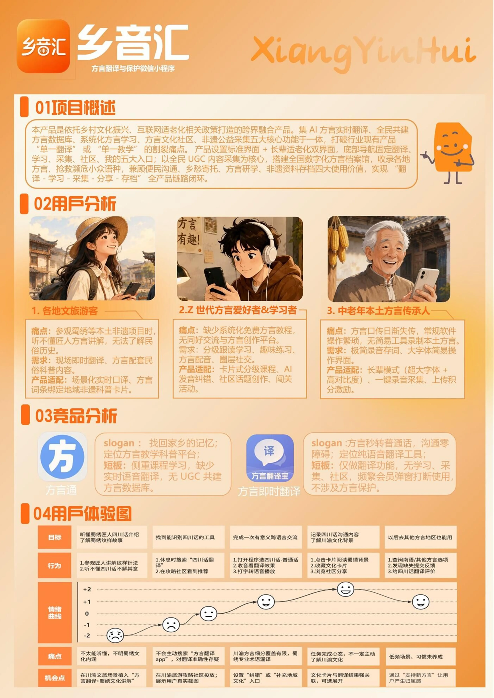
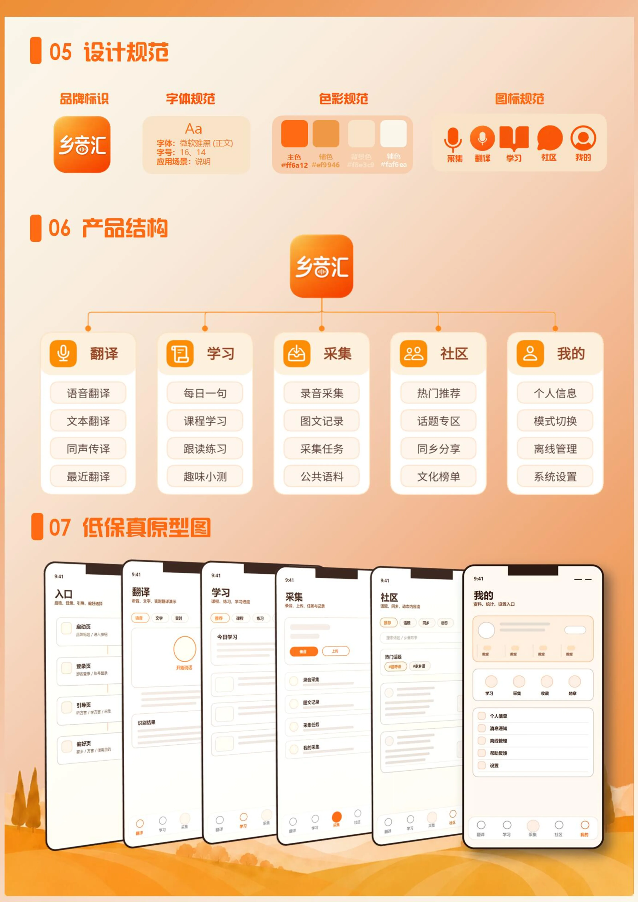
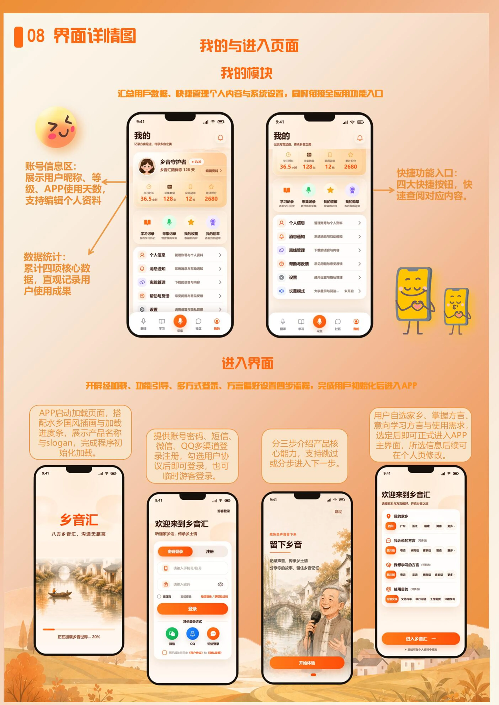
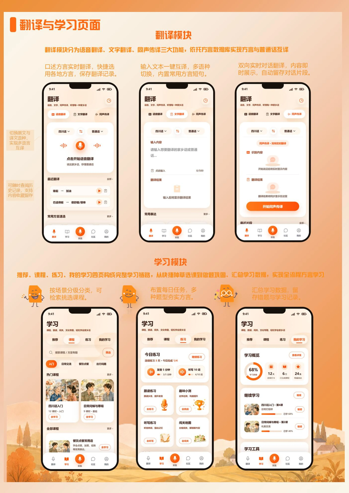
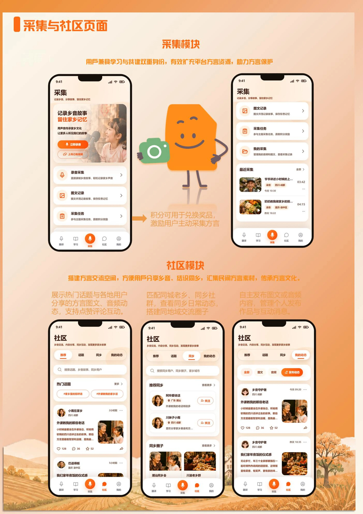
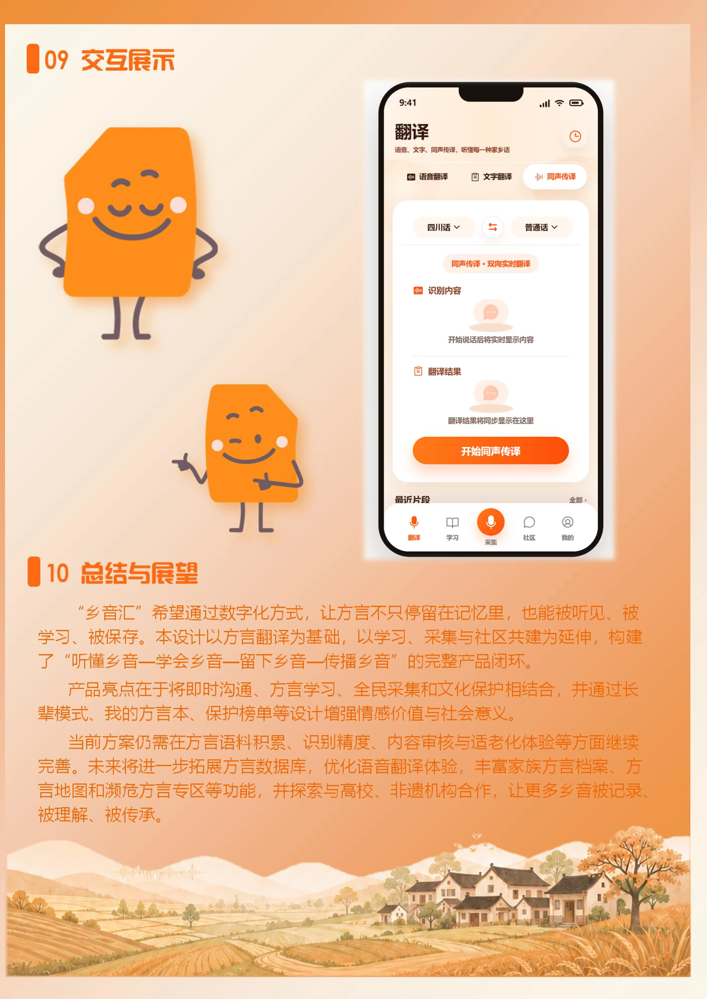

← 返回作品集
AI影像
- 项目类型
- 我的角色
- 项目属性

2026.06—11 · 9个连续活动
沿着“唤醒记忆—引爆互动—沉淀情感”的传播路径，查看每个活动如何从策划构想落到具体视觉。
01 / 09
Interaction Demo
Exhibition Boards






Visual Archive · 83 张视觉记录
从静态构想到动态叙事
以校园真实建筑为视觉基础，通过 AIGC 图像生成、图生视频与后期剪辑，让熟悉的校园空间在长卷中缓缓展开。
声音
意图
Visual References
真实校园照片为建筑形态、空间关系和环境细节提供参照，也是统一生成画面风格的重要基础。